BLSC04-SH001 · Divine As Always
Completed15s · Open with Sylvain's practiced charm and Mercedes's immediate, gentle deflection.
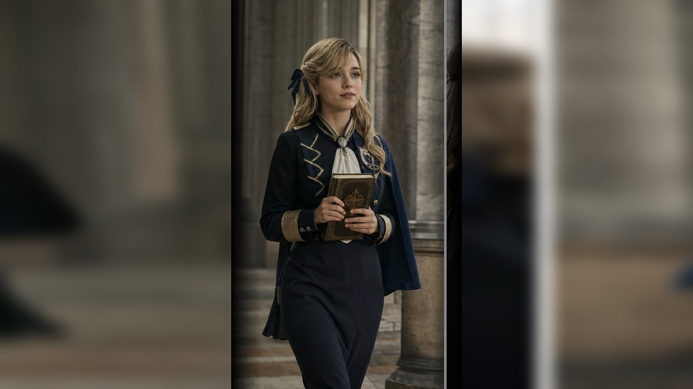
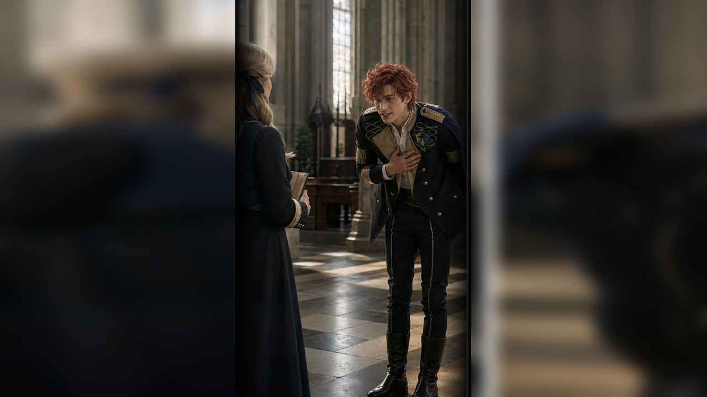
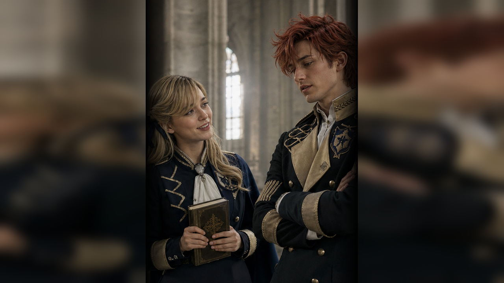
BLSC04-SH002 · Worse Either Way
Completed15s · Let Sylvain try to repair the line and make it worse under Mercedes's serene attention.
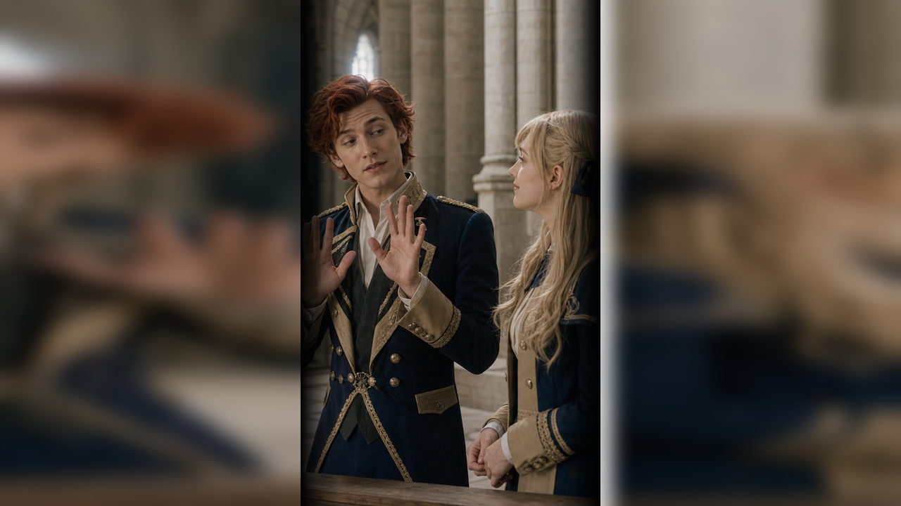
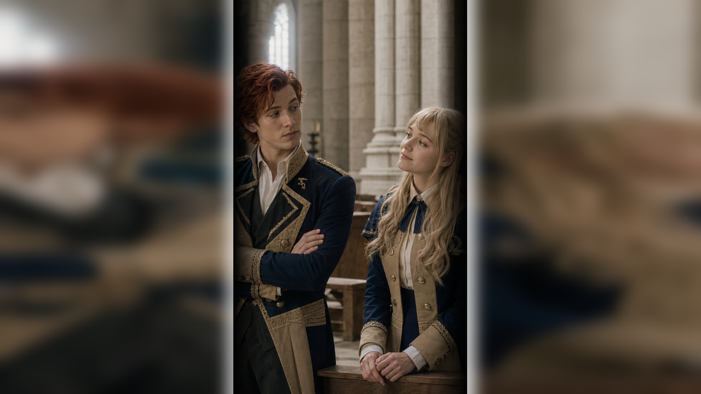
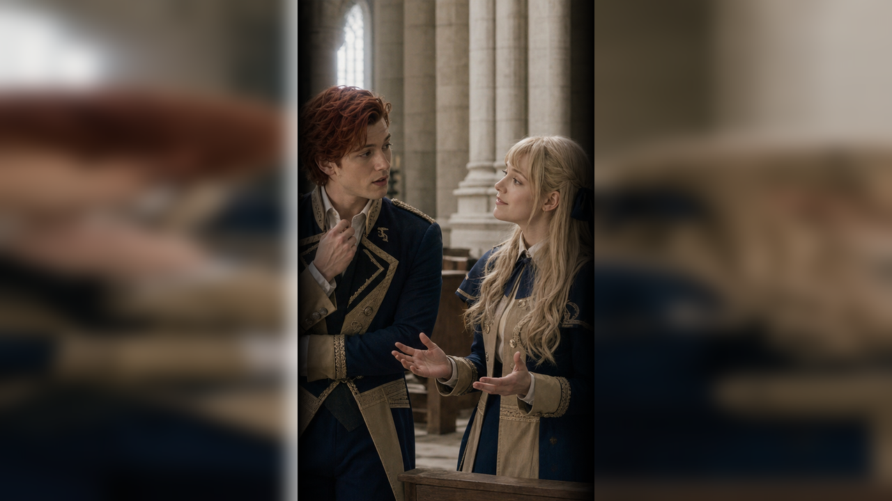
BLSC04-SH003 · Ordinary Conversation
Completed15s · Shift into the source's prayer and childhood conversation.
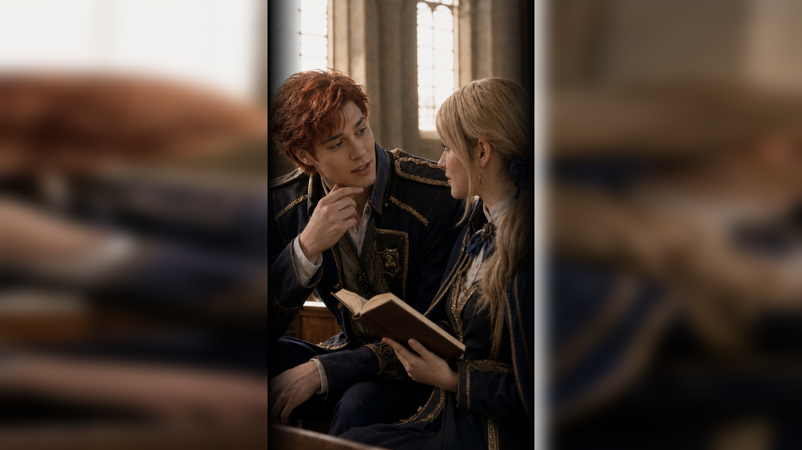
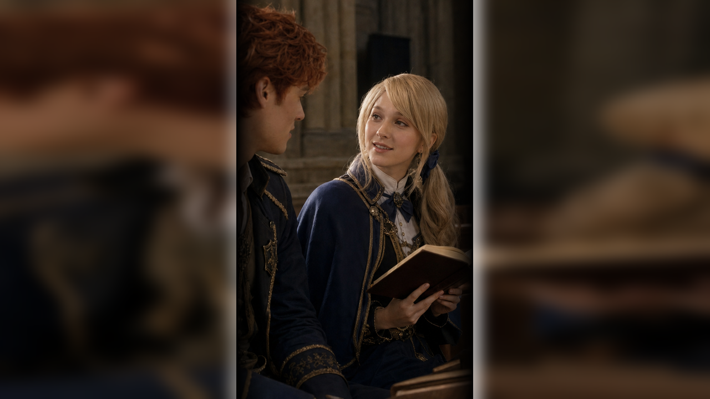
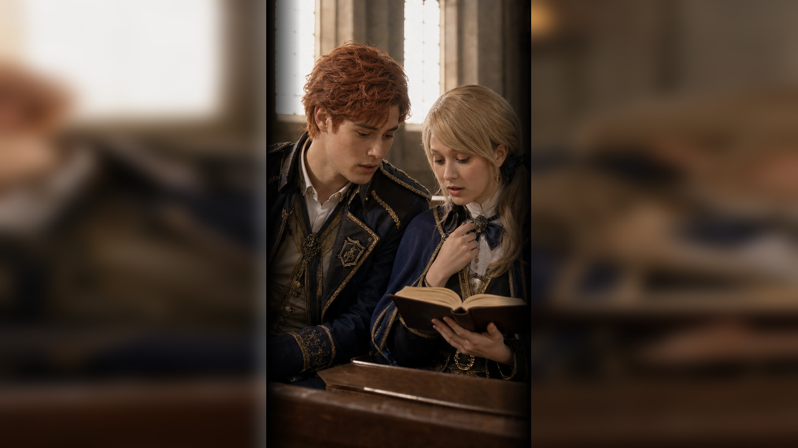
BLSC04-SH004 · After The Smile
Completed15s · End with light comedy but preserve Sylvain's darker Crest thought as a quiet tag.
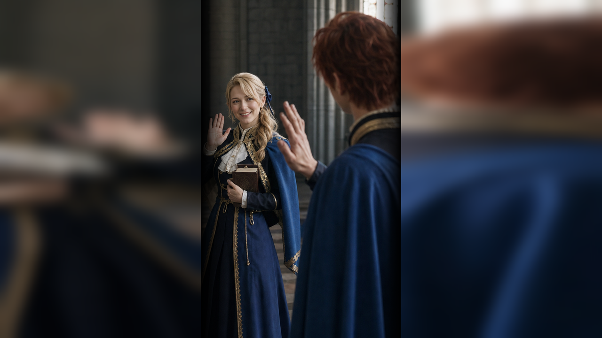
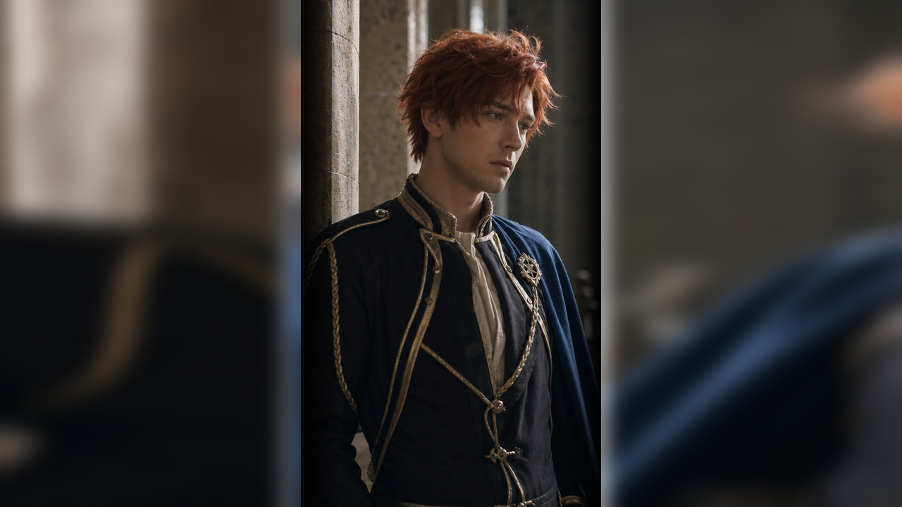
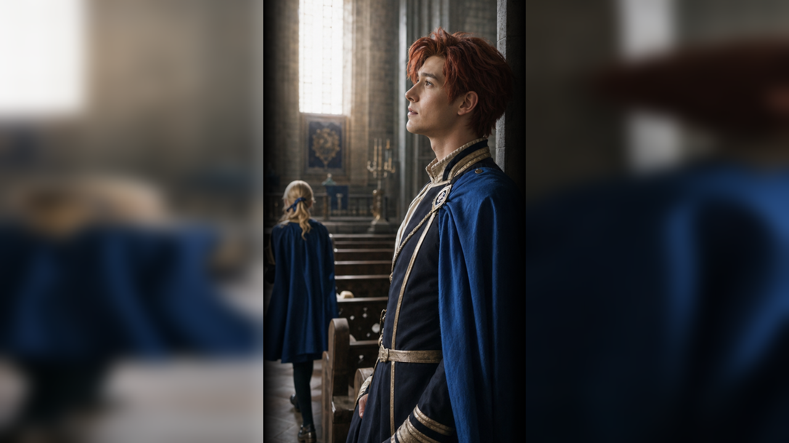